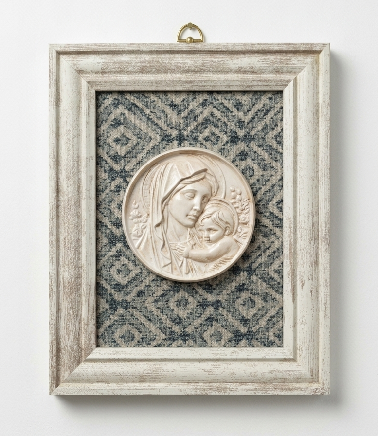

Yesos
Ambientadores de Yeso

Ambientador Yeso Blanco con Difusor
Ambientador artesanal de yeso con difusor incorporado. Perfecto para habitaciones y espacios pequeños.
Medidas: 8 cm de alto
5,50 € / unidad
Ambientador Yeso con Flor
Ambientador de yeso decorado con flores naturales secas. Añade un toque elegante a cualquier rincón.
Medidas: 10 cm de alto
7,00 € / unidad
Ambientador Yeso con Flor Colores
Ambientador de yeso con flores naturales en tonos variados. Diseño vibrante y atractivo.
Medidas: 10 cm de alto
7,50 € / unidad

Ambientador Yeso con Hoja Seca
Ambientador de yeso blanco decorado con una hoja seca natural. Estilo minimalista y natural con variantes de diseño.
Medidas: 9 cm de alto
6,50 € / unidad

Ambientador Yeso (Modelos Múltiples)
Ambientadores de yeso en modelos de diseño exclusivo. Complementa perfectamente cualquier rincón de tu hogar.
Medidas: 8 cm de alto
6,50 € / unidad
Ambientador Yeso Modelo Cactus
Ambientador de yeso blanco puro. Diseño clásico que encaja en cualquier estilo de decoración.
Medidas: 8 cm de alto
7,50 € / unidad

Ambientador Yeso para Coche
Flor de yeso diseñada especialmente para el coche con sistema de clip. Fórmula artesanal resistente al calor.
6,00 € / unidadBandejas y Platos

Bandeja Yeso Blanca
Bandeja de yeso blanco artesanal. Ideal para organizar objetos pequeños o como elemento decorativo.
Medidas: 20 cm × 15 cm
5,99 € / unidad


Bandeja Servilleta (Varios Modelos)
Bandejas de yeso artesanales decoradas con técnica decoupage. 100% personalizables con la imagen, estampado o servilleta que más te guste para crear una pieza única.
Medidas: 17 cm × 9 cm
10,99 € / unidad

Bandeja Anillos
Bandeja elegante de yeso artesanal ideal para organizar anillos y joyas. Diseño minimalista que combina con cualquier decoración.
Medidas: 25 cm de largo × 11 cm de ancho
18,00 €
Plato Sencillo
Plato de yeso blanco con acabado sencillo. Ideal como base para velas o como elemento decorativo.
Medidas: 15 cm de diámetro
5,99 € / unidad
Plato Hoja
Plato de yeso con textura de hoja natural. Añade un toque de naturaleza a tu decoración.
5,99 € / unidad
Plato Moto
Plato de yeso con detalle de patrón moto. Diseño único y original para decoradores aventureros.
Medidas: 15 cm de diámetro
8,99 € / unidadFiguras y Sets Decorativos

Figura Ambientador (Abrazo Madre e Hija)
Figura decorativa artesanal con propiedades ambientadoras. Combina arte sentimental con funcionalidad para el hogar.
Medidas: 11,5 cm de alto x 6 cm ancho
10,50 € / unidad
Set Acanalado
Set de vaso de yeso con acabado acanalado. Incluye vela aromática perfumada.
Medidas: 10 cm de alto (vaso)
15,00 € / unidad
Set Virgen
Set exclusivo de yeso con imagen de Virgen. Pieza especial para espacios sagrados o decorativos.
22,50 € / unidad
Vaso Simple Estriado
Vaso de yeso con textura estriada. Perfecto como base para velas aromáticas.
Medidas: 7 cm de diámetro
6,00 € / unidad
Vaso con Flor Vela
Vaso de yeso decorado con flor seca natural. Incluye vela aromática de soja.
Medidas: 7 cm de diámetro
10,99 € / unidad
Vaso con Vela
Vaso de yeso blanco con vela aromática de soja. Aroma envolvente y decoración elegante.
15,00 € / unidad
Cuenco Decorativo
Cuenco de yeso artesanal. Perfecto para decorar o guardar objetos pequeños.
Medidas: 15 cm de largo × 9 cm de alto
6,99 € / unidad

Bombonera Estriada Botánica
Bombonera artesanal de yeso con un diseño de relieve botánico delicado. Ideal para decoración selecta.
Medidas: 10 cm de diámetro
15,00 € / unidad


Cuenco Decorativo con Velas Temáticas
Exclusivo recipiente moldeado con polvo cerámico prémium Raysin de Rayher, caracterizado por su acabado ultrablanco y suave textura. Alberga un set de velas artesanales en cera de soja 100% natural, libres de tóxicos y disruptores endocrinos. Disponible en varios diseños temáticos (cactus, rosas y motivos variados).
Medidas: 8,5 cm de diámetro
7,50 € / unidad
Cuenco de Yeso con Vela de Soja
Gran pieza decorativa elaborada de forma artesanal con polvo para moldear Raysin de Rayher. Su interior contiene una vela de cera de soja pura y de quemada limpia. Una opción elegante y sostenible, totalmente respetuosa con tu salud al estar libre de componentes nocivos.
Medidas: 15 cm de largo × 9 cm de alto
15,00 €Ambientadores de Soja


Ambientador Botánico de Soja y Abeja
Sutil fusión de cera de soja y cera de abeja 100% natural, moldeada en delicadas siluetas botánicas (flor y óvalo). Decorados a mano con flores secas y una elegante cinta de gasa, estos ambientadores perfuman cualquier espacio de forma saludable, sin liberar humos nocivos ni alterar el equilibrio de tu hogar.
Medidas: Variadas (7,5 cm de diámetro aprox.)
7,50 € / unidad
Ambientadores de Soja
Velas ambientadoras de soja 100% natural. Ecoamigables y de larga duración con aromas naturales.
Medidas: 7 cm de alto aprox.
6,99 € / unidad
Ambientador Soja con Flores Secas
Vela de soja con flores secas naturales. Combina aroma natural con decoración botánica.
Medidas: 7 cm de alto aprox.
6,99 € / unidad
Ambientador Soja con Flores Secas 2
Vela de soja con flores secas modelo 2. Variante exclusiva con diferentes aromas.
Medidas: 7 cm de alto aprox.
6,99 € / unidad
Vela de Soja con plato
Vela de soja 100% natural. Sin tóxicos, larga duración y aromas premium.
4,99 € / unidad
Vela de Soja con Flor
Vela de soja 100% natural sin tóxicos, larga duración y aromas premium.
5,99 € / unidadMomentos Especiales
Bodas · Bautizos · Comuniones · Regalos personalizados
Cada boda, bautizo o comunión merece un recuerdo único
Creamos piezas personalizadas con el nombre, fecha e imagen que elijas.
- Ambientador (5,99 €): 7 cm de alto. Incluye difusor 10 ml a elegir.
- Bandeja (12,00 €): 20 × 15 cm. Vela de soja con aroma a elegir.
- Personalización: Incluye nombre y fecha en cada pieza[cite: 6].


Un recuerdo eterno para un día inolvidable
Creamos cuadros artesanales personalizados con oración, nombre y fecha, convirtiéndolos en el regalo perfecto para el protagonista del día.
- Precio: Desde 25,00 €.
- Medidas: 25 x 25 cm.
- Totalmente personalizado: Incluye oración, nombre y fecha.
- Ideal para: Bautizos y Primeras Comuniones.


Regalos para Mamá
Detalles únicos hechos con el corazón
Detalle Especial para Mamá
Sorprende con una pieza artesanal exclusiva. Un recuerdo diseñado para emocionar, elaborado cuidadosamente en Madrid.
- Artesanía exclusiva: Pieza única hecha a mano.

Bandeja Vela Soja Con Nombre
Bandeja personalizada con vela de soja. Ideal para regalos especiales y eventos personalizados.
Medidas: 20 cm × 15 cm
12,00 € / unidad
Ambientadores y Detalles a Medida
Fabricamos ambientadores de yeso y placas decorativas personalizadas con la imagen, nombre o fecha que necesites para tus invitados. Ideales para bodas, bautizos y comuniones.
Presupuesto a medida
Decoración Mamá
Pieza decorativa especial para regalar a mamá. Diseño cálido y significativo.
Medidas: 12 cm × 13 cm
8,99 € / unidad
Ambientador Armarios
Ambientador de yeso especialmente diseñado para armarios y espacios cerrados. Aroma duradero.
Medidas: 7 cm de alto
5,99 € / unidad